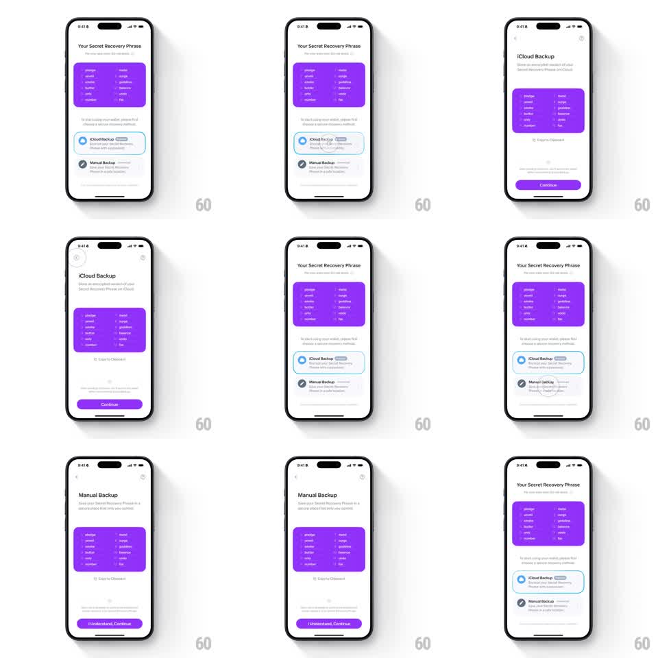

Media
Frame-by-frame

Rebuild this interaction 1:1: Family's recovery phrase card morph - on "Your Secret Recovery Phrase", picking a backup method (iCloud Backup / Manual Backup) makes the purple phrase card scale and shift as a shared element, becoming the focal card of the chosen step, then returning to its slot when navigating back.

Rebuild this interaction 1:1: Family's recovery phrase card morph - on "Your Secret Recovery Phrase", picking a backup method (iCloud Backup / Manual Backup) makes the purple phrase card scale and shift as a shared element, becoming the focal card of the chosen step, then returning to its slot when navigating back. ## Integration Integration: stack-agnostic spec - springs given as stiffness/damping, timed motions as duration + curve; map every value to your framework and animation library of choice. ## Scene Light "Your Secret Recovery Phrase" screen: the purple twelve-word card, then two option rows - "iCloud Backup" (cloud icon, "Recommended" tag) and "Manual Backup" (shield icon). Choosing iCloud Backup pushes the "iCloud Backup" screen where the same purple card sits smaller and centered above a "Copy to Clipboard" link and "Continue". Choosing Manual Backup pushes "Manual Backup" with the card at top and "I Understand, Continue". ## Motion spec Pattern: shared-element card morph between onboarding steps. - Tap an option: the row highlights (150ms) and the purple card lifts from its slot (shadow deepening) while the new page slides in beneath it (300ms ease-out). - The card travels and resizes to its destination rect (spring ~300/20), corner radius easing (16 -> 12pt), the words inside reflowing with a slight scale (0.95) rather than a jump. - The option row's icon crossfades into the new page's header glyph (200ms). - Back swipe: the card morphs home along the reverse path, landing in its slot with a soft settle (scale 1.02 -> 1, spring ~340/16). ## Calibration - The card never disappears mid-transition - it is the continuity object across every step. - Words stay readable during the morph; no blur or fade on the card itself. ## Reduced motion The card crossfades between positions (250ms) without travel. ## Don't miss - Both destination screens reuse the same card asset at different sizes - layout adapts, content does not change. - The "Recommended" tag stays attached to the iCloud row through the highlight.